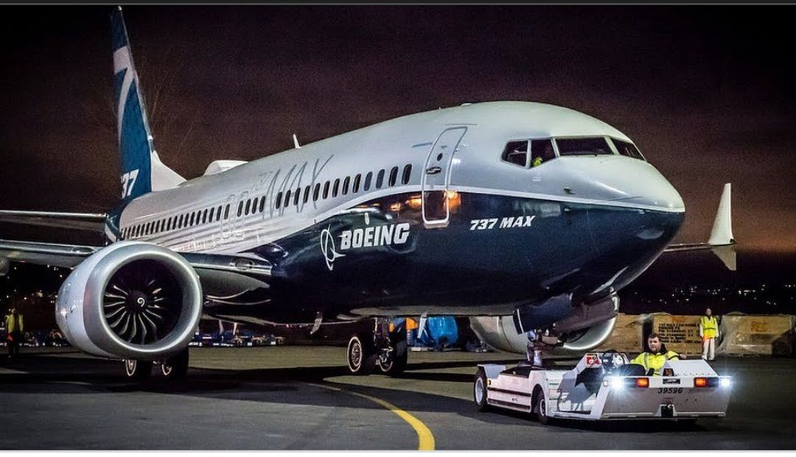

BOEING
|
||
|---|---|---|
|  | ||
| BOEING 737 | BOEING 777 | BOEING 787 |
| Brief Description | |
|---|---|
BOEING 737✈✈ |
The Boeing 737 is a narrow-body airliner produced by Boeing at its Renton Factory in Washington. Developed to supplement the Boeing 727 on short and thin routes, the twinjet retains the 707 fuselage cross-section and nose with two underwing turbofans. |
BOEING 777✈✈ |
The Boeing 777, commonly referred to as the Triple Seven, is an American long-range wide-body airliner developed and manufactured by Boeing Commercial Airplanes. It is the world's largest twinjet. The 777 was designed to bridge the gap between Boeing's other wide body airplanes, the twin-engined 767 and quad-engined 747, and to replace older DC-10s and L-1011 trijets. |
BOEING 787✈✈ |
The Boeing 787 Dreamliner is an American wide-body jet airliner manufactured by Boeing Commercial Airplanes. After dropping its Sonic Cruiser project, Boeing announced the conventional 7E7 on January 29, 2003, focused on efficiency. The program was launched on April 26, 2004, with an order for 50 from All Nippon Airways (ANA), targeting a 2008 introduction. |
home page(welcome on board)